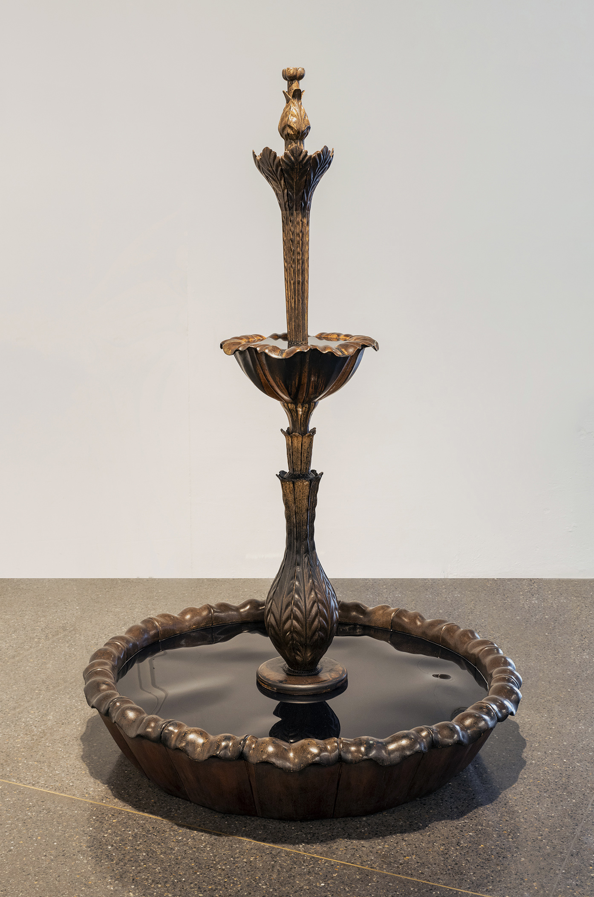
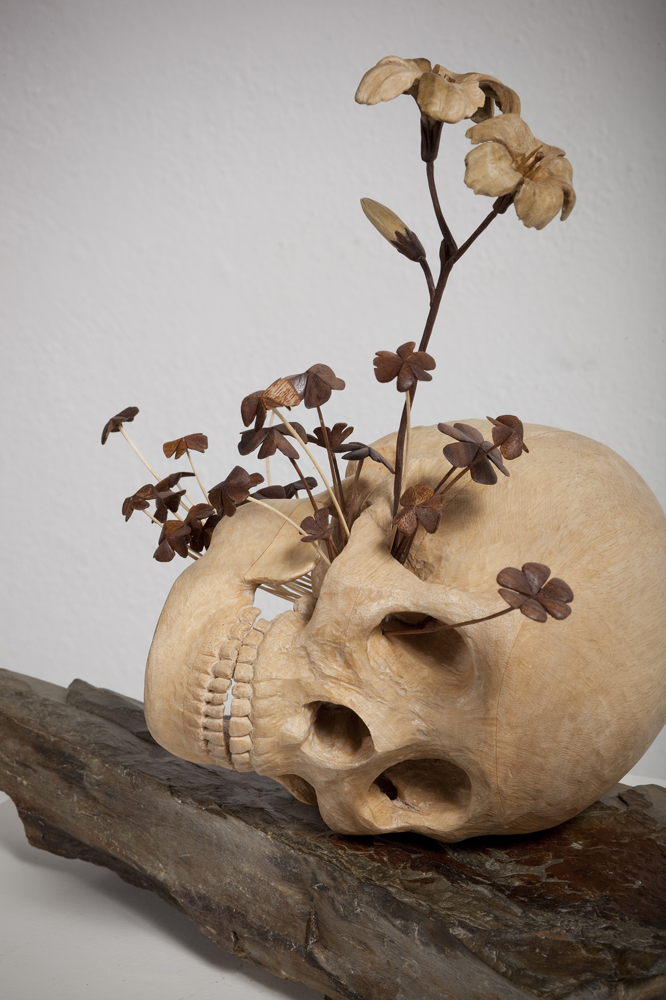

selected works
Conversations in Stone
Rustenberg Granite, Piketberg Sandstone
88 x 60 x 220cm
2018

The Mirror of Ink
Black Ink patina, hand carved Meranti wood, Perspex
120 x 120x 190cm
2011
The Mirror of Ink(detail)
Black Ink, hand carved Meranti wood, Perspex
120 x 120x 190cm
2011
Find a Space/Create a Centre
Granite, Retired Climbing Rope
27 x 44 x 35cm
2018
Find the Place/Create a Centre
Granite, Retired Climbing Rope
38 x 35 x 22cm
2018
Fool's Gold Maquette
Polished Sandstone, Bronze
25 x 25 x 45cm
2013
Homage to the Irrelevant and Indifferent
Soapstone, Yellowwood
50 x 24 x 20cm
2018
A Stone's Breath
Wood, Found Stone
15 x 15 x 10cm
2017
Untitled
Mixed Media
120 x 120 x 150cm
2013
Self Portrait as a Vessel
Mahogany Sapele, African Black Wood, Pecan, Green Marble
62 x 38 x 38cm
2015
Self Portrait as a Stone Vessel
Marble, Jasper, Soap Stone
45 x 45 x 60cm
2015
Three New Wands
Mixed Wood
Dimensions Variable
2017
Parquetry
Mixed Wood, Antique Chair
250 x 200 x 100cm
2012

My Winter Your Summer
Jelutong, American Poplar, Walnut, Slate
40 x 15 x 35cm
2011
Purple Hearts
Purple Heart, Found Rock
13 x 12 x 12cm
2011
The Gateway to the Invisible must be Visible (a work in collaboration with Yogi de Beer)
Granite, porcelain
193 x 262 x 50cm
2013
Oak Vase
Oak
20 x 20 x 38cm
2016
Untitled
Bronze, Black Mirror, Kiaat
120 x 120 x 150 cm
2013
Holy Water - A Study in Rain Making
Meranti, Cherry, Soapstone, Holy Water
82 x 104 x 18cm
2014
Sol Niger (The Black Sun)
Mixed Wood, Perspex
60 x 60 x 30cm
2012